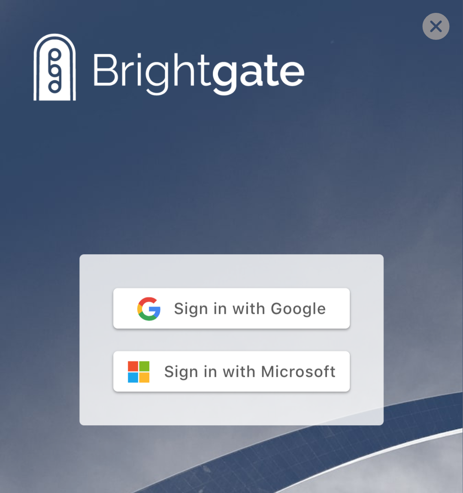
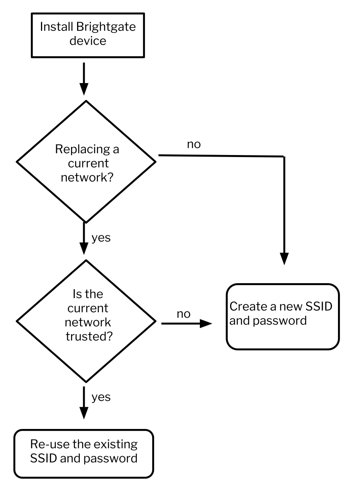
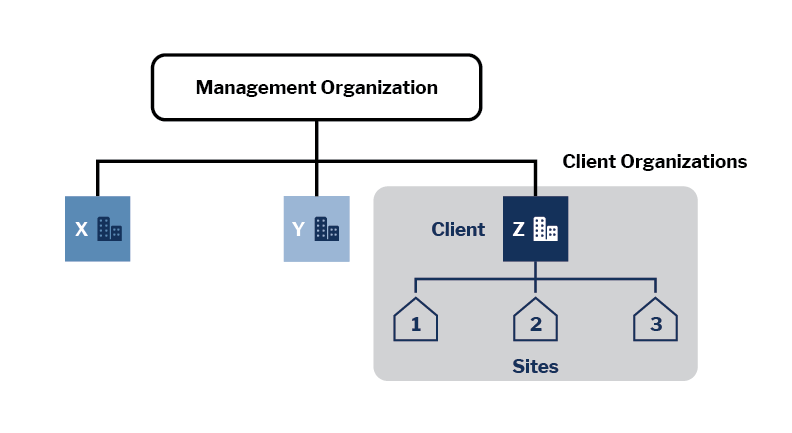
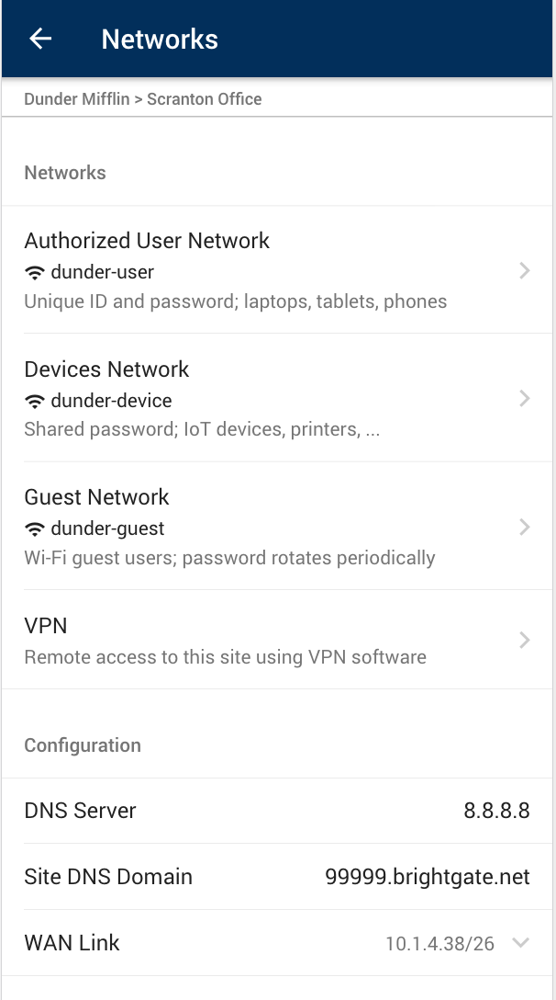

NDA REQUIRED
Q1 2020
Version 3.0
We wrote this guide to help you understand both how Brightgate secures your network and how to administer your Brightgate networks. Please jump to topics of interest or read the guide in its entirety.
This guide is written those administering Brightgate-secured networks appliance during our Beta program.
Business networks are under attack. And attacks are becoming both more frequent and more automated. As a result, your data—the lifeblood of your business, from accounts receivable to contracts to your customer's data and the devices that process it—present an ever-increasing risk. While big enterprises can spend millions on a team of IT experts, and the systems those experts require, small businesses don't have that kind of budget or technical knowledge, increasingly leading hackers to target small business. Small businesses need an automated response to fend off bots, phishing, viruses, ransomware, exfiltration, and malware. That’s why small businesses need precisely the type of platform that we’ve developed at Brightgate: one that enables automated protection to prevent bad actors from misusing both your networks and the resources they connect.
Brightgate observes your devices and their behavior all the time when they are on the network. Our machine learning creates a model of usual behavior on your network, so odd behavior is immediately identified. But we don’t stop with simply identifying odd behavior. We move a potentially infected device into quarantine to prevent it from infecting other devices on the network, then limit its network access until the issue is resolved. In addition, we notify the device's owner and network administrator of the issue, using language that’s easily understood, and suggest appropriate actions to take so the device can be safely updated or sanitized and again permitted access to the network. We'll even help you with remote IT to resolve the problem. Brightgate also blocks online destinations that we know are bad news—phishing, malware, and spyware. The Brightgate security team also stays on top of the latest threats. We automatically update every platform to defend against each new threat, covering your entire network—all your devices—all the time.
Brightgate gets it. Small businesses like yours are very good at the skills your business was founded on—whether it’s designing systems, serving a meal, or offering consulting services. The core competence of your business is not in network security, but ours is. We understand that you need to adopt technologies that matter to your business without fear that you're putting your business at risk. As the technology you adopt becomes more sophisticated and interconnected, your risk of exposure to bad actors increases. Cybersecurity should, then, be a critical part of your technology focus. Until now, though, this has not been the case. Network security has been, at best, an afterthought as cybersecurity offerings have been both too complex and too expensive, and many small business owners like you have been unable to find a solution that scales appropriately, focusing too much either on home user needs or on enterprise requirements.
Brightgate solves the problem of overly complex solutions with an intelligent, easy-to-use solution that secures your network. We use a simple approach to configuration and onboarding, automating most decisions and implementation. This removes the need for highly technical, expensive staff. Our simple subscription model make your network security spend more efficient. And, our technology scales to your business, hitting the sweet spot between a home office and a large enterprise.
With Brightgate, you know which devices are on your network; what those devices are doing on the Internet, whether data is being passed out of your network, and to where; whether devices on your network are using a default password; and who has been provided guest network access. Importantly, Brightgate technology quarantines devices that are acting out of character, protecting your network from infection. We also notice if data has been or is being sent to known bad actors, and we can identify the amount of data sent.
Brightgate is designed to ensure your business can easily reap the benefits of automated cybersecurity. The simplicity of managing our cybersecurity solution, with alerts that make the issue easy to understand and specify the level of urgency, makes Brightgate’s technology easy to administer.
Your Brightgate appliance helps you easily and quickly:
Besides the potential privacy issues, if your data is being held for ransom, reconstructing your data can be almost impossible and the ransom itself may be excruciatingly expensive. Brightgate is a valued partner to small businesses like yours searching for a zero administration answer to today’s cybersecurity risks.
We built our product from the ground up, after extensive research, to ensure that a cybersecurity platform used by small businesses would be both easy to use and easy to administer. A couple of key ideas informed our design:
We recognized that building a secure network means that devices fulfilling different functions in your business should be provided different types of access to one another. It's fundamental to our design: access is given where it's needed. Sometimes that's one-way. Important computers should be able to configure a thermostat, for example, but that thermostat shouldn't be allowed to attack those computers.
Next, we designed a more secure method of authorizing devices to use your networks. We make it easy for every employee to have their own username and password to connect devices like laptops, tablets, or phones. Devices that share a common Wi-Fi password, like thermostats or light switches, are on a separate network.
The end result? We created trust groups
The Brightgate platform assigns each device connected to your network into a trust group—a logical grouping of connected devices. We make it easy to manage your network by providing default trust groups and automating trust group assignment of every device.
Trust groups are how we protect the devices on your network and reduce the risk that malware or viruses will spread. The trust group to which a device is assigned affects both the level of trust for this device and the device's access to to other devices when it is on your network. Devices within a trust group communicate with and have access both to other devices assigned to that trust group and to devices assigned to trust groups that are less trusted and known.
The less we know and trust a device, the less access we should give that device. That keeps untrusted devices from accessing or attacking other devices on your network.
The way you add a device to your network affects the trust group we assign that device into. Think of it this way: phones and laptops owned by employees present a different type of risk than a Wi-Fi enabled thermostat. While the various types of authentication are beyond the scope of this guide, it's helpful to understand that Brightgate supports different types of network authentication, which all use WPA2.
Note: We recommend including the
suffix in the network name so it is clear to people choosing from among
them when adding a device or logging on for the first time. For example,
Acme Corp would name the
networks Acme-users, Acme-device,
and Acme-guest when first
setting up their network. During the Beta program, Brightgate will set up
your networks following this recommendation.
Brightgate automatically assigns each device to a network and trust group, following security policies that make sense based on the device’s function; thermostats, security cameras, and other Internet-enabled tools serve your organization in one way—phones and laptops serve your organization in an entirely different way. Each of these devices presents a different type of risk and requires a different ability to communicate with other devices. The result? We’ll assign them to different trust groups.
Our assignment of devices into a trust group is the result of thoughtful planning, from both usability and security perspectives. A network administrator's laptop, for example, must be able to communicate with a Wi-Fi enabled thermostat to set it up properly, so the thermostat must be accessible to the laptop that wishes to use it. When a device is added to your network, Brightgate uses the type of authentication provided by the device as part of the process to assign it to a trust group. If that assignment doesn't suit your company policies, you can move the device as discussed in the section Change a device's trust group assignment.
A Wi-Fi enabled thermostat is a good example of why assignment into a
trust group makes your network safer. You want a thermostat to be
available to a known and trusted employee device, but you likely don't
want a laptop assigned the guest trust group to communicate
to that same thermostat. This makes sense—you typically don’t want guests
adjusting your thermostat, nor do you want guest laptops communicating
with and potentially infecting devices that you already trust. Moreover,
the thermostat's devices trust group means that a rogue
thermostat won't be attacking either guest or employee devices.
The core trust group is most typically populated with
devices owned by network administrators or devices that are critical to
your business. Devices assigned to the standard trust group
are typically employee laptops and phones. In this setup, should an
employee laptop become infected with malware, that laptop will never be
able to infect the network administrator devices in the core
trust group. And the moment that laptop starts acting oddly, Brightgate
moves it to quarantine, so it can't infect the devices in
the standard trust group either.
Devices that aren’t assigned to a trust group are unenrolled,
which means they have not been explicitly granted access to the network.
They will not have credentials or be able to use your network. The most
common unenrolled devices will be IoT devices that have the correct shared
Wi-Fi password (PSK) but have not been authorized by an administrator. To
keep your network secure, we only permit network access to devices that
have been assigned into a Brightgate trust group. This way, we can
determine how trusted or known the device is, assign it to an appropriate
trust group, and watch the device's behavior to keep your network secure.
Devices added to the Authorized User network are automatically added to
the standard trust group, though administrators may move
them to a different trust group, as discussed in the section Change
a device's trust group assignment. Devices added to the Devices
network are automatically assigned to the devices trust
group. And guests are assigned to the guest trust group.
This table provides examples of device types, network type, and default trust group assignment:
| Device Type | Network Type | Default Trust Group |
|---|---|---|
| Laptop | Authorized User (EAP) | standard |
| Tablet | Authorized User (EAP) | standard |
| smartphone | Authorized User (EAP) | standard |
| smart thermostat | Devices (PSK) | devices |
| Guest contractor laptop | Guest | guest |
The Brightgate appliance provides a default set of trust groups, so
network administration isn’t a chore. During the Beta program, the
default trust group is the trust group into which a device is initially
enrolled. Devices authenticated using EAP are automatically added to the
standard
trust group. Devices authenticated using PSK are automatically assigned to
the devices trust group. Administrators can move devices to
a different trust group, as discussed in the section Change
a device's trust group assignment.
View the default trust groups for your network as discussed in the section View your Network Details, which lists the Trust Group Configuration for each network:
*-users network:
core: The trust group reserved for the most trusted
devicesstandard: The trust group most appropriate for
devices owned by regular members of your team*-device network:
devices: The trust group for Internet of Things (IoT)
devices, such as thermostats or security camerasquarantine: The trust group for devices that are
behaving oddlyunenrolled: The trust group for all manually
configured IoT devices or other unknown devices.*-guest network:
guest: The trust group for devices that require
temporary network accessQuarantined devices are separated from other devices on your network to prevent potential infection and maintain security. Quarantine serves as a virtual “jail”. It’s where we put devices that look like they might be infected with a virus or bot. In short, we’re preventing devices that exhibit odd or suspicious behavior from communicating with the Internet as well as with other devices on your network. Quarantine stops devices from infecting other devices, allowing you to investigate them (with our helpful suggestions) and fix the issue at hand.
For example, if a thermostat assigned to the devices trust
group begins slowly dripping data to a URL with an unusual address or if
an automated security check of a laptop fails, the suspicious device is
automatically removed from its assigned trust group and moved to
quarantine.
You’ll get an alert when a vulnerability is identified and we'll move the affected device into quarantine. We’ll also include information about why we moved the device into quarantine. Once the identified issue is resolved, the device is returned to the network and its previously assigned trust group.
Administering networks managed by Brightgate doesn't require constant oversight because we're doing so much behind the scenes. We're constantly monitoring your network and device behavior for vulnerabilities as well as managing the trust group assignment for your devices. As a result, with Brightgate, administration of your network involves the following tasks:
The Brightgate appliance installs quickly with these three steps:
The status indicators provide visual confirmation of connectivity. For more information about the indicators, please see the section status indicators.
After physical installation, proceed to set up your account.
To manage networks and add devices, you'll first need to create an account in the Brightgate management app, if you don't have one already. For more information about how the Brightgate management app is organized, you can read more in the section devoted to the Brightgate management app.
The Brightgate management app supports Google Sign-In and Sign-In with Microsoft. Note: During the Beta program, Google Sign-In and Sign-In with Microsoft are supported for user logins. Other identity providers will be available in future releases.
When you're logging in to the Brightgate management app, we authenticate
you using your Google or Microsoft account, then walk you through creating
and storing a Wi-Fi user name and password. You need to store your
Wi-Fi user name and password to add your devices to the Wi-Fi network for
authenticated users. Note: The authenticated users network
typically ends with -users; ask your network administrator
if you're not sure of the network name.
With your Brightgate appliance installed and your account set up, it's time to name your gateway and, if you're installing multiple appliances, the associated satellites:
To start using the security features of the Brightgate appliance, set up your Wi-Fi networks. If you want to continue using existing network names, we'll overlay the existing Wi-Fi networks for you during the Beta program, but it's helpful to know the overall process.
Start by deciding whether you're:
The network name is also called a Service Set ID (SSID). If you don't know what that is, you're welcome to read more about it in this helpful article from Wikipedia.
This graphic illustrates the basic process of deciding how to set up your network:

As discussed in network authentication and trust groups work together, Brightgate creates three networks based on the method a device uses to authenticate to the network:
When you first set up your Brightgate appliance, name each network to reflect the SSID, or network name, that you would like to use at your site.
setme-users, setme-devices, and
setme-guest.-users, -devices, and -guest to
more
easily differentiate among your Brightgate-secured networks.Add devices that use the Wi-Fi user name and password created in the
Brightgate management app, such as a laptop, phone, or tablet, to the
authenticated users network. Note: The authenticated users network
typically ends with -users; ask your network administrator
if you're not sure of the network name. For example:
Once you have a Wi-Fi user name and password created for your Wi-Fi network, add your Apple computer to the network with these steps:
Note: See set up your account if you haven't yet created a user name and password for the Wi-Fi network.
-users; ask your network
administrator if you're not sure of the network name).When your Mac joins the network, you'll see the bars of the Wi-Fi logo fill in to confirm that your Mac is connected.
Once you have a user name and password created for your Wi-Fi network, add your iPhone or iPad to the network with these steps:
Note: See set up your account if you haven't yet created a user name and password for the Wi-Fi network.
-users; ask your network administrator
if you're not sure of the network name).Once you have a user name and password created for your Wi-Fi network, add your Android phone to the network with these steps:
Note: See set up your account if you haven't yet created a user name and password for the Wi-Fi network.
-user; ask your network administrator if you're not sure of
the network name). You may need to wait while your Android device scans
for networks in range.Once you have a user name and password created for your Wi-Fi network, add your Windows computer to the network with these steps:
Note: See set up your account if you haven't yet created a user name and password for the Wi-Fi network.
Your Windows 10 computer will automatically find all wireless networks in range.
-users; ask your network administrator
if you're not sure of the network name.


Connected,
secured as its status. If the process to connect automatically fails, or your computer does not see your enterprise network, use this procedure to connect manually:


-user). Select
WPA2-Enterprise
as the Security type. Do not enter a security key. Windows will
now open the Wi-Fi configuration interface from the taskbar as described
previously. Complete the connection by providing the Wi-Fi user name and
password created in the Brightgate management application.

If a dialog box displays stating that the network "already exists", click "Use the existing network." If you still fail to connect, use Windows's Wi-Fi configuration to Forget the network as described in this helpful community article from Microsoft.
IoT devices are those that share a common password. You need the password
for the *-device network to use in the IoT's app or display.
To view the password:
*-device network
to view the Network Details*-device
network, using the passphrase displayed in Step 4At this point, you're ready to administer your Brightgate-secured network. This section will help you get your guests online, manage accounts, and respond to vulnerabilities.
Add one-time users' devices, those that need only temporary access to
Wi-Fi, to the *-guest network, which uses a password that
administrators rotate.

When Brightgate identifies a vulnerability, you'll see an alert section similar to this when you first log in:

When alerted to a vulnerability, administrators have two options:
Important: During the Beta program, once the the threat
is resolved, administrators will need to view the trust group assigned to
the device and potentially move it from quarantine to the
appropriate trust group, which is discussed fully in change
a device's trust group assignment.
The Brightgate management app provides all the information you need to administer and secure your network. Access the management app by pointing your web browser to https://svc1.b10e.net. The Brightgate management app is optimized for viewing on any device. On smaller screens, the left pane options are provided using the hamburger menu in the top left of the screen.
Once logged in, you can view your account details, open the Brightgate Admin Guide, select your site (only if you have multiple sites to manage), request support, or log out. If you are administering only one site, you'll see these options immediately upon logging in:
Brightgate provides customer support from 9:00 AM to 5:00 PM Pacific Time Monday through Friday. Click the Brightgate Support link to enter a support ticket or to search the Brightgate knowledge base.
In addition, our online documentation is available by clicking the link to the Admin Guide. The Guide is fully searchable using your browser's search function.
A Managed Service Provider (MSP) securing networks deploying Brightgate needs to manage networks for multiple clients using the Brighgate management app. These clients may have installed the Brightgate appliance at one or more sites. The following diagrams illustrate an MSP that manages Brightgate-secured networks for multiple clients, one of which has multiple sites.
Brightgate support first establishes the MSP as an organization. Note: During the Beta program, Brightgate support will establish the MSP and its relationship to client organizations and sites.
Then Brightgate support associates the MSP organization with the clients that the MSP manages.
As sites are created for the client organization, the MSP automatically gains access to manage them.

Note that in many cases, an MSP may also may have their own collection of Brightgate sites; they can manage their clients' networks and their own using a single interface.
In the Brightgate management app, if you manage multiple organizations, switch among them by clicking the Organization button at the top left, then selecting the correct organization from the displayed list.
This appliance provides the following:
The front panel contains the following:

The LEDs provide an at-a-glance status regarding network activity and the Brightgate appliance. They are lit during normal operation and will flicker with network activity. LEDs corresponding to unused ethernet ports will not be off.
Use the LEDs as a visual indication of appliance status:
The Power, Network, and Brightgate LEDs on the top row blink off, then on during the appliance boot sequence. If these three LEDs remain solidly on, but the Wi-Fi and network port LEDs show no activity, please reboot the appliance. If a reboot of the appliance doesn't resolve the LEDs from solid to blinking, please contact Brightgate support.
When connecting your device to the authenticated users network for the first time and periodically when the certificate requires renewal, the device may present a certificate for you to accept. This certificate confirms the network is what it says it is, and accepting the certificate allows you to trust this network without manual intervention whenever you connect the device in the future.
While your network administration team is best qualified to help you
understand how certificates are used in your environment, Brightgate
suggests you inspect any certificate before adding it to your device.
While
the method of inspection varies according to the device type, ensure the
certificate is issued by Let's Encrypt, the certificate authority used by
Brightgate, and that the Subject Name looks like
number.brightgate.net, where
number
is a five digit number. The Trust level should be set to Always
Trust
for EAP and Basic Policy, if that level of specificity is
available on your device.
Brightgate secures your networks automatically, working in the background scanning every device added to your Brightgate networks, all the time. As a result, administrators don't need to actively secure a Brightgate network—compliance with security policies is enforced through the process of authenticating users, then adding their devices to the network as well as during our constant vigilance of network activity—unless alerted to do so by the Brightgate appliance. This type of alert occurs if we find a device is in violation of security policies, or acting oddly, as discussed in remediate threats.
Brightgate supplies details specific to each device on the network. Access this information directly by clicking the alert when you first log in or, from the main menu, select site > Devices > select device name.
Details for each device on the network display, specifying if Brightgate has identified any vulnerabilities. In this example, the device is using a password that exposes both the device and network to potential attack. Brightgate suggests a remedy, with helpful links to further information if you'd like to know more about the issue. We also specify the time the vulnerability was identified and when a repair, if any, was executed.
Also confirm the network details for this device, including the:
The Access Control displays the assigned trust group for the device, which is discussed fully in change a device's trust group assignment.
The Client Attributes display the name, DHCP ID, and DNS Name (if set) for this device.

To view compliance information across all your Brightgate-secured networks, from the main menu, select site > Compliance Report.
If a device is currently violating policy, the red lightning icon
displays in the Summary. The Summary also displays the
total number of accounts currently enrolled in the network.
Active Violations, if any are currently identified, are listed in priority order. Click the device name to view device details, which fully describes the security policy violation and suggests what should be done to remediate the issue. Resolved Violations provides a historical listing of vulnerabilities observed and resolved within the network.
Trust Group Summary displays a succinct list of compliance status
for all trust groups that the site maintains, across all networks
(*-users,
*-device, or *-guest).
In this example, the network has 21 active devices, one of which is yet to be scanned, and one that is using a password that exposes the device and network to potential attack.
To view devices on your network, from the main menu, select your site > Devices. The parentheses next to Devices displays the active and inactive devices enrolled across the Brightgate-secured networks for your organization.

Brightgate tracks device behavior based on those that are authenticated to the network. As a result, devices are not explicitly removed from a Brightgate network. Instead, the credentials used to add the device to the network must be revoked.
In a future release, the Wi-Fi user name and password associated with the
user who added the device to network will be revoked when their Google
credentials expire, which will prevent the device from being added to the
network with credentials that are no longer in use by the organization.
Note: If the removal of a device is required, move the device to
the unenrolled trust group as described in the section Change
a device's trust group assignment or contact Brightgate support for
assistance.
Trust groups are how Brightgate protects the devices on your network and reduces the risk that malware or viruses will spread. The trust group to which a device is assigned affects both the level of trust for this device and the device's access to to other devices when it is on your network. Devices within a trust group communicate with and have access to both other devices assigned to that trust group and devices assigned to trust groups that are less trusted and known.
Devices that aren’t assigned to a trust group are unenrolled,
which means they have not been explicitly granted access to the network.
They will not have credentials or be able to use your network. The most
common unenrolled devices will be IoT devices that have the
correct
shared Wi-Fi password (PSK) but have not been authorized by an
administrator. To keep your network secure, Brightgate only permits network
access to devices that have been assigned into a Brightgate trust group.
This way, we can determine how trusted or known the device is, assign it to
an appropriate trust group, and watch the device's behavior to keep your
network secure.
Important: During the Beta program, all devices added to the
*-device network will be assigned to the
unenrolled trust group. Administrators will need to explicitly
move devices to the
appropriate trust group to approve the addition of a device to this network.
The trust group and their intended purpose are as follows:
core:devices:guest:quarantine:standard:unenrolled:internal:Trust groups may be changed for devices connected to both the wired port and devices connected to the Wi-Fi network.
To change the trust group assignment for a device connected to the Wi-Fi network:
standard trust group:To change the trust group assignment for devices connected to a wired port:
devices trust
group:
During the Beta program, passwords are not automatically rotated.
Administrators may manually change the password for the *-guest
and *-device network. From the main menu, select your site
> Network Configuration to display the networks secured by
Brightgate. To change the password:
*-guest or
*-device.
The Brightgate management app displays information regarding the configuration of all Brightgate-secured networks for your organization as well as network accounts across all networks.
To view your networks, from the main menu, select your site > Network Configuration.
The networks defined for your site display as well as network configuration, including the networks' DNS server and WAN address.

To view the details for a particular network, select it from the display. Brightgate displays for each network:
*-users network, the method is WPA-EAP.
For the *-devices and *-guest network, the
method is WPA-PSK.*-users network
core: The trust group reserved for the most
trusted devices.standard: The trust group most appropriate for
devices owned by regular members of your team*-device network
devices: The trust group for Internet of Things
(IoT) devices, such as thermostats or security camerasquarantine: The trust group for devices that are
behaving oddlyunenrolled: The trust group for all manually
configured IoT devices or other unknown devices*-guest network
guest: The trust group for devices that require
temporary network access*-device and *-guest), which
can be viewed by clicking the eyeball icon.The Brightgate management app supports two types of account privilege:
*-users network*-guest network
An account with administrative privileges may grant administrative privileges to an account that has already been created in the Brightgate cloud. To grant administrative privileges:
To view accounts created for the Brightgate cloud, from the main menu, select Accounts.
Click the account for which you'd like to view details to do any of the following:
For users who are taking an extended leave and whose accounts will not require access to the network, but will need access in the future, Brightgate provides the ability for administrators to deprovision accounts. Deprovisioning an account removes the Wi-Fi credentials associated with the account, eliminating the ability to log in to the network. A deprovisioned account may, in the future, log back in using their Google or Microsoft credentials and reprovision themselves using the steps outlined in set up your account.
To deprovision an account:
For accounts that must be removed from the network, and will not need access in the future, Brightgate provides the ability for administrators to delete accounts. Deleting an account removes the Wi-Fi credentials, eliminating the ability to log in to the network. The affected Brightgate cloud account will be removed and Brightgate will no longer bill for this account.
To delete an account:
In certain circumstances, an administrator may need direct access to the local appliance, such as when Internet connectivity is lost and logging in as a Brightgate cloud user would fail.
To manage site-specific administrators, from the main menu, select your site > Users.
Additional site-specific administrators may be added by using the + icon at the bottom of the list; however, during the Beta program, please contact Brightgate support for assistance if this type of user is required.